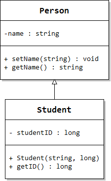

The UML Diagram

The Person class represents people, and Student is a new (specialized) kind of Person. On the right is the UML (Unified Modeling Language) class diagram for these classes.
Person is our base class. Each Person has:
- a single data member, name, stored as a string. The minus sign preceding name tells us that the data member will be private.
- one mutator, setName() that allows you to change the name of the Person.
- one accessor, getName(), which allows you to retrieve the value of name.
- The plus sign before the member functions indicates that they are public.
- In each entry, the word appearing after the colon is the data member type, or member function return type.
The Student class is derived from Person.
- In the UML diagram, the hollow-headed arrow pointing from Student to Person says Student is derived from the Person class.
- Student has one private data member, studentID, stored as a long.
- The class has a public constructor that takes two arguments.
- The class has an accessor to retrieve the value in studentID.
There are no mutators to set or change the ID. While a student might change their name (because of marriage, for instance) they can never change their student ID.
 This course content is offered under a
CC
Attribution Non-Commercial license. Content in this course
can be considered under this license unless otherwise noted.
This course content is offered under a
CC
Attribution Non-Commercial license. Content in this course
can be considered under this license unless otherwise noted.